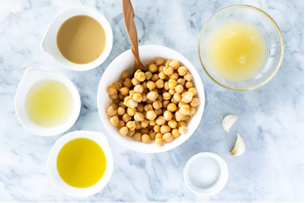

1.FALAFEL

For the Falafel:
- 1 cup canned chickpeas, rinsed and drained
- 1/2 onion, peeled
- 2 cloves garlic, peeled
- 3 tablespoons chopped cilantro (or parsley)
- 2 tablespoons chopped parsley
- 1 teaspoon ground cumin
- 1 teaspoon baking powder
- 1/2 teaspoon salt
- 1/4 teaspoon black pepper
- 1/4 cup all-purpose flour
- Optional: Pinch of red pepper flakes (or to taste)
- 1/4 cup sesame paste
- 1/4 cup water
- 2 tablespoons lemon juice
- 1 clove garlic (grated)
2.KEBABS
For the Kebabs:- 1 red onion (peeled and quartered)
- 1 bell pepper (your choice of color, seeded and cut into approximately 2" pieces)
- 1 cup cherry tomatoes
- 1 tablespoon olive oil
Make the falafel by adding the chickpeas, onion, garlic, cilantro or parsley, ground cumin, baking powder, salt, black pepper, flour, and red pepper flakes, if using. Puree until the mixture is mostly smooth but it does not need to be completely smooth.
Refrigerate for at about 15 minutes.While the falafel base is cooling in the fridge, make the tahini by combining the sesame paste, water, lemon juice, grated garlic, salt and pepper in a bowl.
Pre-heat the oven to 400 F. Toss the onion, bell pepper, and tomatoes in the olive oil and season with salt and pepper. Spread out on a baking sheet lined with parchment paper and roast in the oven for about 30 minutes or until softened and lightly browned.
Add the two tablespoons of oil to a second sheet pan lined with parchment paper. Form the falafel into balls, approximately 1 ounce each (we used a cookie scoop) and gently roll them in the oil and place on the pan. Bake in the oven for 20 to 30 minutes or until the balls are a light golden brown.
Prepare the kebabs by alternating pieces of vegetables with falafel balls and drizzle with the tahini sauce.Hummus with tahini:

- 1 (16-ounce) can of chickpeas
- 1 (16-ounce) can of chickpeas
- 1/4 cup liquid from the can of chickpeas
- 3 to 5 tablespoons lemon juice, depending on taste
- 1 1/2 tablespoons tahini
- 2 cloves garlic, peeled and crushed
- 1/2 teaspoon salt
- 2 tablespoons olive oil
- Handful of fresh parsley leaves, optional garnish

Drain the chickpeas and set aside the liquid from the can. Combine the drained chickpeas, lemon juice, sesame paste, crushed garlic, and salt in a blender or food processor. Add 1/4 cup of the reserved liquid from the chickpeas. Blend for 3 to 5 minutes on low until thoroughly mixed and smooth.

chickpeas, lemon juice, sesame paste, crushed garlic and salt ingredients for Hummus with Tahini in blender Place in a serving bowl, and create a shallow well in the center of the hummus.
Add a small amount (1 to 2 tablespoons) of olive oil in the well. Garnish with parsley (optional).
Serve immediately with fresh, warm or toasted pita bread, or cover and refrigerate.A SIMPLE KIBBEH

For the Bulgur:
- 1/2 pound bulgur
- 3 cups cold water

For the Beef Preparations:
- 2 medium onions, 1 finely chopped, 1 coarsely chopped
- 2 pounds lean ground beef or lamb, divided
- 1 1/2 teaspoons kosher salt, divided
- 1 1/4 teaspoons freshly ground pepper, divided
- 2 tablespoons olive oil
- 1/2 cup toasted pine nuts, optional
- 1 teaspoon ground allspice
- 1/4 teaspoon ground cumin
- Vegetable oil, for frying
- Lemon wedges, garnish
Gather the ingredients. In a medium bowl, place the bulgur wheat and add the cold water. Let it soak for 30 minutes.
Remove excess water by placing the bulgur in a cheesecloth or clean kitchen towel and thoroughly squeezing. Reserve.

Make the Fine Kibbeh Dough
In a medium bowl, mix the coarsely chopped onion with 1 pound of the meat, the soaked bulgur, 1 teaspoon of the salt, and 1 teaspoon of the pepper. Stir well to combine.
Process the mixture in batches in a food processor: Pulse, then process to a sticky, smooth, dough-like consistency, adding some ice as needed to help break down the meat. Repeat the procedure until all of the beef mixture has been processed. Reserve, covered.
Paste-like kibbeh mixture in the food processor Make the Coarse Kibbeh Stuffing In a large non-stick skillet over medium-high heat, add the olive oil and the finely chopped onion, and cook, stirring occasionally, until the onions are translucent, about 2 minutes.

Add the remaining pound of meat and the pine nuts, if using. Break apart the meat with a wooden spoon until well combined. Add the allspice, remaining 1 teaspoon salt and 1/4 teaspoon pepper, and the cumin and stir well.
Once the beef is no longer pink, remove from the heat and allow it to cool off for 10 minutes. Assemble the Kibbeh Using damp hands, take an egg-sized amount of raw and fine meat mixture and form it into a ball. Using your index finger, poke a hole in the ball, making a pocket for the filling. Add some cooked filling and pinch the top to seal the ball.

Note: This recipe will yield 25 small-sized kibbeh—about 1 1/4-ounce dough plus 1/2-ounce of filling—so be mindful of how much filling you use when stuffing the raw meat dough.
Shape it into a ball, or pinch the ends to form a little football. Fry the Kibbeh In a deep frying pan or deep-fryer, add 4 cups of oil and heat to 350 F.
Fry the kibbeh in batches until golden brown and crunchy, or about 5 minutes. Be mindful of not overcrowding the pan so the balls cook evenly. Drain on paper towels and serve hot or warm.